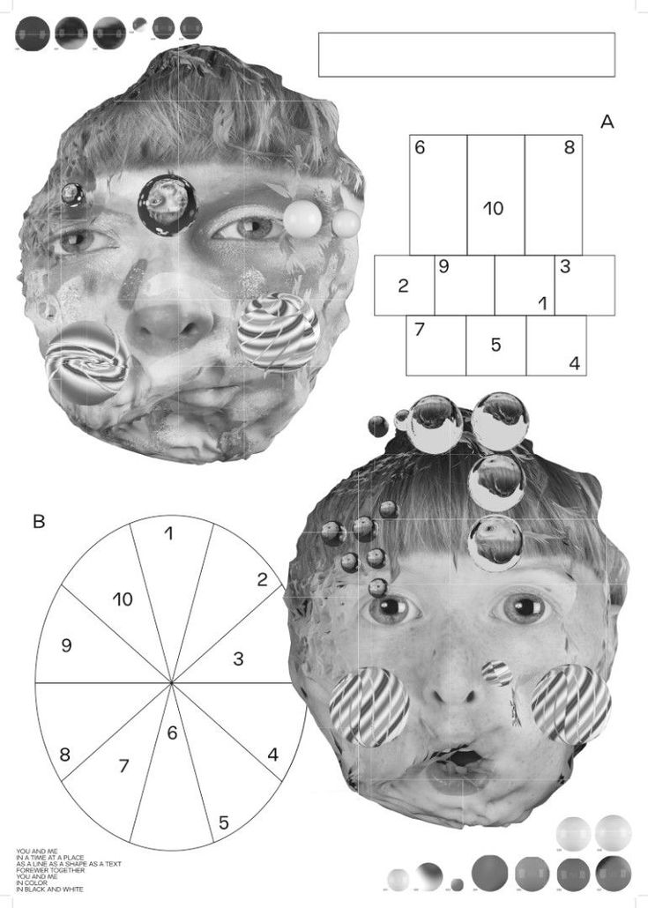

1
We used to sit in alphabetical rows in a small room filled with big bulbous big-back computers.
2
All of my friends had last names A-C, a far cry from my S name.
3
I’d let Reading Rainbow play for about 10 minutes, ensuring that the audiobook would play at a noticeable volume, mixing all of our fried, chunky noises together. The noises sounded so modern before, yet so analog now.
4
Then I would reach my gangly leg under the table and flick off the computer via a comical big red switch, crying out against our school’s faulty internet.
5
I’d then move to the empty seat in the A-C group.